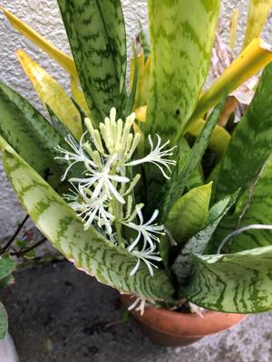
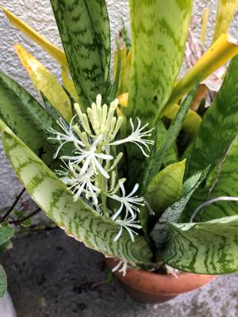
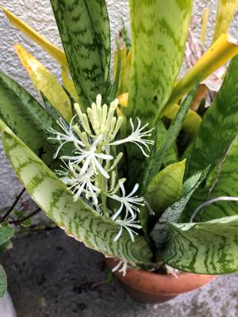

うるがいの話 ある日
最新: テンポのメモ
うるがいとは 前提知識です
カニの画像をクリックすると『うるがいの話』サイトを表示します
うるがい(ｳﾙｶﾞｲ urugai)とは、『もずくがに』の名前でとても大きくなります。
たながー（ﾀﾅｶﾞｰtanagaa）とは手長えびのことで、何種類かあり大きいのは車 エビぐらいになります。
ぶながー(bunagaa)とは、赤い髪の毛、赤い身体、そして身長は１ｍ２０ｃｍ ぐらい、川の蟹を食べているの目撃された。場所は沖縄県国頭郡大宜味村のと ある村僕の隣近所に住んでいる爺さんから、聞いた話です。
2021年08月28日 (土）
テンポのメモ
15:17

この書き込みの作業は１１日以上も前の８月１７日のメモである、少しハマり
過ぎたと思う。左脳が衰えないように、今現在は専門書と眺めている。
曲の速度を表すテンポ。ポピュラー音楽では、テンポを表すときに数字を使う
ことが多いです。「テンポ６０」と言われれば１秒と同じ速度なので、時計の
秒針を見るとカウントすることができます。
ふむふむ、そうだよね。
暇人は、『ロック＆ポップススタンダード・バイブル』という本にあった『サ
ウンド・オブ・サイレンス・サイモン＆ガーファンクル』のテンポ１０３の楽
譜をみながら、前弦楽奏者向けの作曲ツール「TuxGuitar（タックスギター）」
に続き、ひと昔に流行ったであろう「Power Tab Editor（パワータブエディタ
）」でも、曲をツールで登録してみた。本の楽譜に繰り返し記号ダ・カーポ、
ダルセーニョ、コーダなどがあるが、タックスギターではこれらを展開する機
能がないため、本の小節の数６１が８２（２１小節多い！）になり、曲の登録
にとてもとても、難儀した。でも、パワータブエディタではできるかもと登録
した。なんと、当たり前だが操作性が違うので同じように難儀した。ただし繰
り返しを展開しなくて済むので、譜面と同じ数８２小節で済んだ。分かりやす
い！、せっかくなのでユーチューブにある『サウンド・オブ・サイレンス・サ
イモン＆ガーファンクル』の歌とディスクトップパソコン２台にそれぞれイヤ
ホンを付け、左耳と右耳にそれぞれのイヤホンを突っ込み曲を流してみた。楽
譜のテンポ１０３は遅く、１０６だと左右の音程が合う、おおお、ただ暫く曲
が進むとテンポは微妙にズレて行ってしまう。ん－、そういえばこの本、楽譜
を演奏したＣＤがついていると気づき、ＣＤと同じように比較する。あれ！、
１１２にしないとテンポが合わない、しかも同じように暫くするとテンポがズ
レる。ソフトが悪いのか、演奏が悪いのか。ん、そうだタックスギターと比較
すればいい、とやってみた、なんとタックスギターのテンポは１１３が近くピ
タとテンポは合わない。原因究明は、やめた！、音楽はフィーリングだぜ、ど
うせ無料だし。
この作業で新しいタックスギターの欠点が分かった。それぞれのパソコンの曲
同士の曲を合すため、曲の一時停止と再開をするのだがタックスギターにその
機能がない！。曲の途中で停止すると、また最初から曲を流さなければダメ。
ネットを調べると要望が出ていたが、今のところシカトしている。
ほとんどのプレイヤーは一時停止/再開/ステップ機能を持っています。
なぜタックスギターではないのですか
ふと、アプリでは無理なら外からこのプロセスを制御したらとソフトを探す。
ありました、
Microsoftが提供するProcessExplorer！。
タクスギターのプロセスを選択し、Suspendを実行すると一時停止、再開は
Resumeを実行することで可能。ただし、操作に時間がかかる仕方ない、初め
に戻るよりはまし（後で気づいたが、任意の小節の音符にカーソルを位置づけ
ることでそこから演奏が可能）。一時停止がストップと同じ機能になっている
バグだろうな。２０名以上の人で分担して開発しただろうが、この部分を開発
した人が辞めたとか・・・、いろいろ勝手な想像をする。

 
